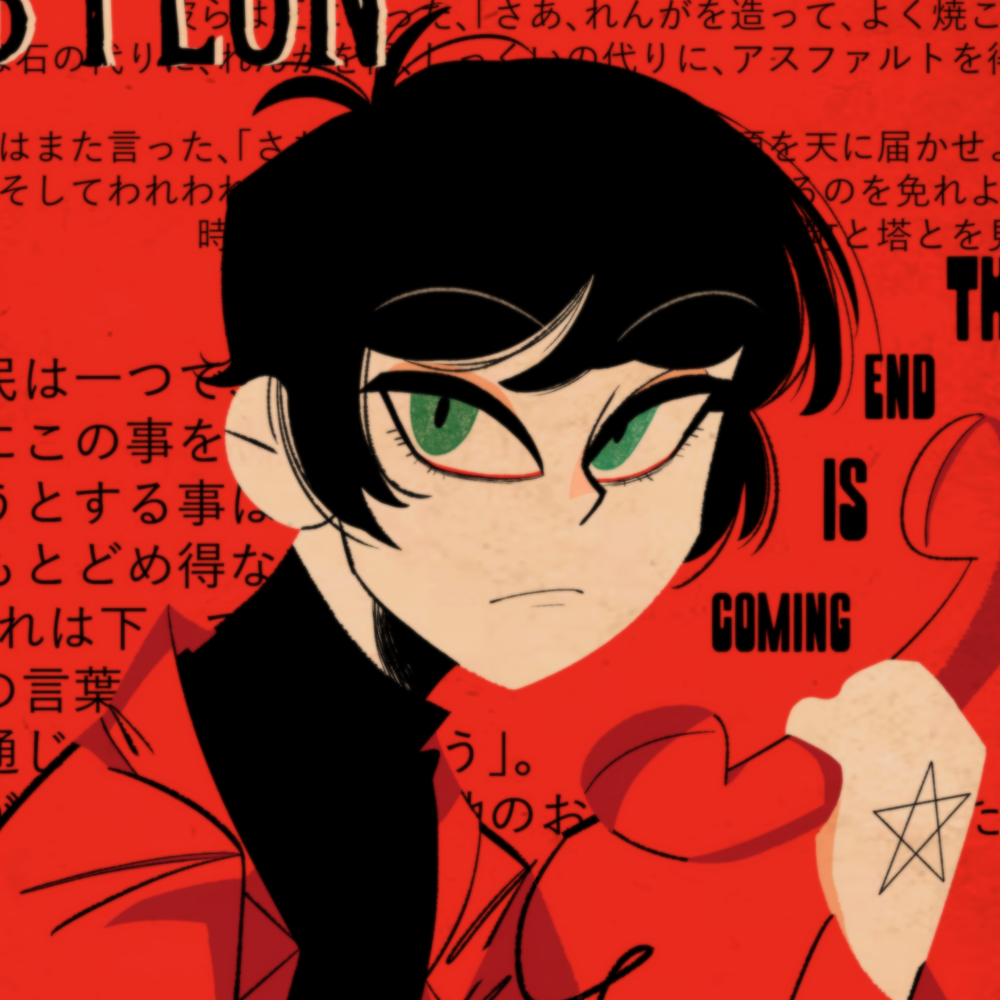

Un usuario random de internet
 Last Update 22/09 8:02 a.mLa autora del blog está durmiendo
- 20 years old
- ♍︎ Virgo
- De las lejanas tierras de Bolivia
- Estudie en el San Ignacio

Gustos Culturales
No soy una persona muy "cultural", rara vez voy a museos o al teatro (excepto cuando tengo presentación, en ese caso yo sería parte del gusto cultura y suena bien raro). En general soy una persona muy sedentaria, me gusta quedarme en mi casa todo el día. Pero tengo algunos gustos culutrales muy contados.
Mis fines de semana se resumen en este gif lol
El Baile
Supongo que ser parte de un ballet folklorico es parte de un gusto cultural. Algo que no se habla mucho, es que en varias de las instituciones se enseña la parte teórica. Basicamente te enseñan la historia detras de cada danza, el significado cultural y las tradiciones que representan. Tambien se aprende sobre las piezas de vestuario, sobre el valor cultural que tienen. Siento que es otra forma de aprender de tu propio país.
Cine
No consumo cine, las películas clásicas me aburren un monton. Mis favoritas en su mayoria son animadas.